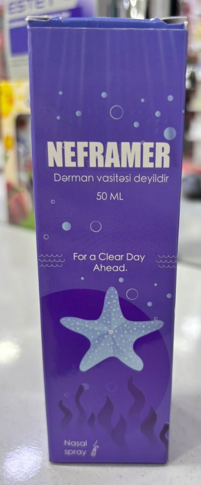
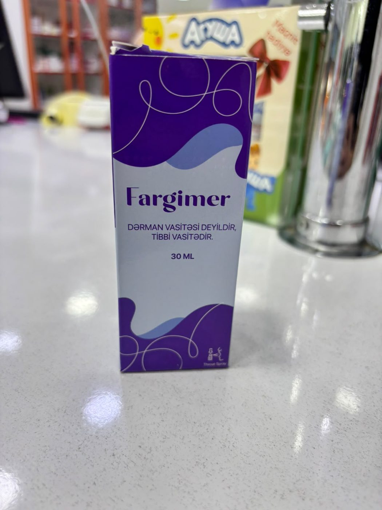

Tibbi vasitə
Fargimer
Ağız boşluğu və boğaz xəstəliklərinin profilaktika və müalicəsində istifadəsi tövsiyə olunan köməkçi tibbi vasitə.
Buraxılış formasıDaxilə qəbul üçün məhlul-sprey
Qablaşdırma30 ml şüşə flakon, karton qutu
Aptekdən buraxılmaReseptsiz
Yararlılıq müddəti3 il
Məhsul haqqında
Fargimer kombinə olunmuş boğaz spreyidir.
İstifadə sahəsi
- Yuxarı tənəffüs yollarının infeksion iltihabı xəstəliklərində köməkçi vasitə kimi: tonzilit, farinqit, larinqit, afoniya, disfoniya
- Orofaringeal infeksiyalar
- Səpkili və xoralı stomatitlər
- Yenidoğulmuşun ağız boşluğunda süd yarası (kandidoz)
- Gingivit, parodontoz
- Boğazda ağrı və qaşınma hissi
- Ağız boşluğunda xoşagəlməz qoxu
- Cərrahi əməliyyatdan sonra
Tərkibi
| Maddə | Miqdar |
|---|---|
| Sürvə yarpaqlarının maye ekstraktıSage leaf liquid extract | 0.01 q |
| Müalicəvi gülümbahar gülünün maye ekstraktıCalendula flower liquid extract | 0.01 q |
| İtburnu güllərinin və toxumlarının yağıRosehip flower and seed oil | 0.03 q |
| Ayıpəncəsi kökünün cövhəriBurdock root tincture | 0.01 q |
| Metilen abısının suda məhluluMethylene blue aqueous solution | 1 % |
Köməkçi maddələr
Propilen qlikol, kalium sorbat, kalium yodid, distillə edilmiş su.
İstifadə qaydası və doza
- Daxilə qəbul olunur (qəbul vaxtı üçün qablaşdırmadakı yazıya baxın).
- 0–6 ay: 1 dozadan gündə 1–2 dəfə.
- 6–12 ay: 1–2 dozadan gündə 1–2 dəfə.
- 1–3 yaş: 2 dozadan gündə 3 dəfə.
- 3–6 yaş: 2 dozadan gündə 3–4 dəfə.
- 6 yaş və böyüklər: 1–2 dozadan gündə 5–6 dəfə, yəni hər 3–4 saatdan bir püskürtmək məsləhətdir.
- Tövsiyə edilən sutkalıq dozanı keçməyin.
Əks göstərişlər
- Etiketdə əks göstəriş qeyd olunmayıb — istifadədən əvvəl həkimlə məsləhətləşin.
Saxlanma şəraiti
18–25 °C temperaturda, birbaşa istilik və günəş şüası düşməyən, uşaqların əli çatmayan yerdə.
İstehsalçı və məlumatlar
- İstehsalçı: EVA MED MMC (Azərbaycan Respublikası, Bakı)
- Ticarət nişanı: EVA MED Medicine
- Seriya: 098 · İstehsal: 21.11.2025 · Son istifadə: 21.11.2028
Tibbi vasitədir, dərman vasitəsi deyil.
Tövsiyə edilən sutkalıq dozanı keçməyin. Uşaqların əli çatmayan yerdə saxlayın. Hamiləlik və laktasiya dövründə, xəstəlik və ya dərman istifadəsi zamanı həkimlə məsləhətləşin.
Qablaşdırma
Fargimer — qablaşdırma şəkilləri
Şəkli böyütmək üçün üzərinə klikləyin.
Digər məhsullar

BAQM
Karno Mer
Ürək-damar sisteminin fəaliyyətini yaxşılaşdırmaq məqsədilə tövsiyə olunan vasitə.

BAQM
Depomer D3+K2
D3 və K2 vitaminlərinin əlavə mənbəyi — 15 ml damcı məhlul (50 000 BV).